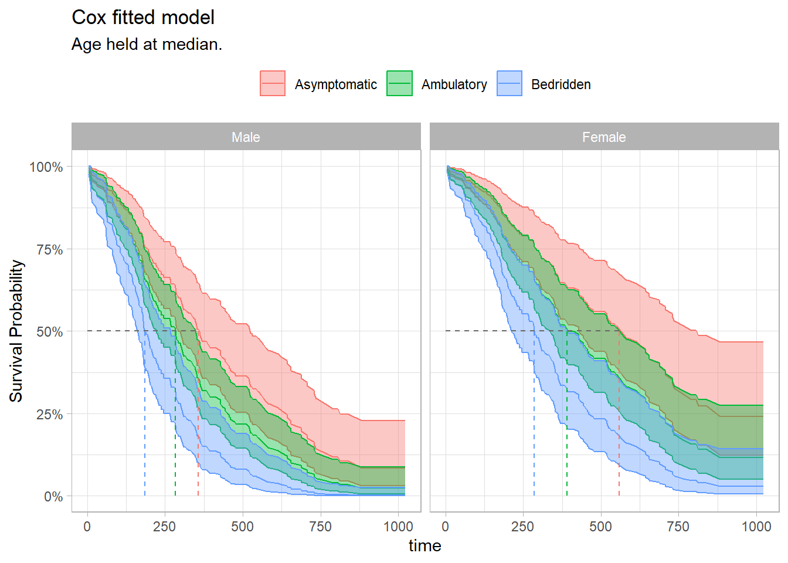
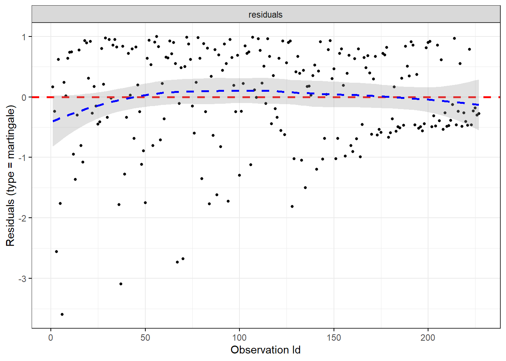
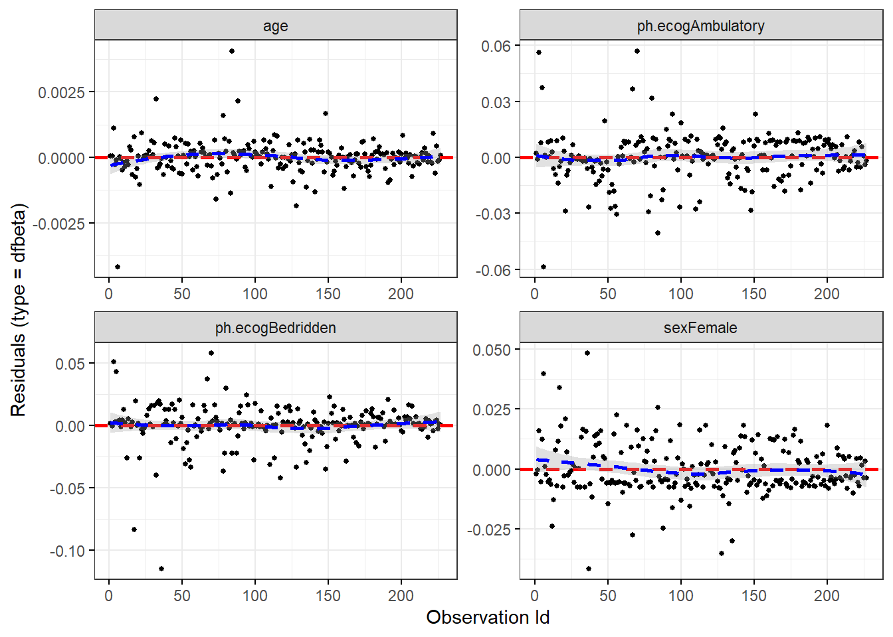
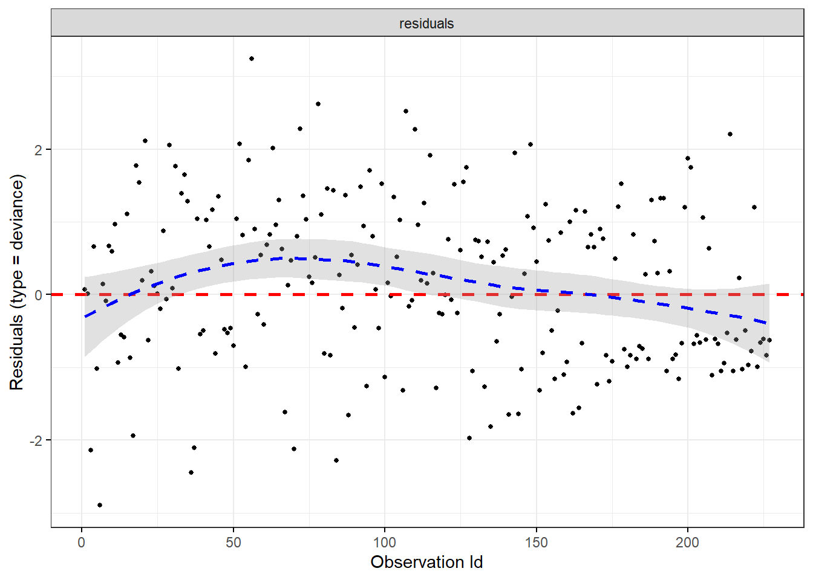
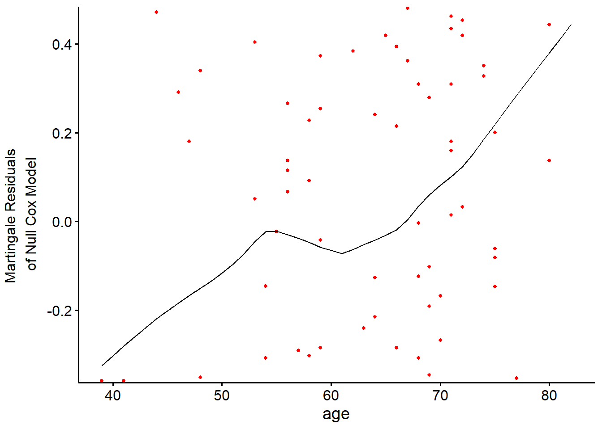

The KM curve with logrank test is a univariate analyses describing the effect of a single categorical factor variable on survival. Parametric and semi-parametric models, on the other hand, are able to describe the effect of multiple covariates. The Cox proportional hazards model is a semi-parametric model. The Cox model expresses the expected hazard, \(h(t)\), as an unspecified baseline hazard, \(h_0(t)\), multiplied by the exponential of a linear combination of parameters, \(\psi = e^{X\beta}\).
\(h_0(t)\) is unspecified because it cancels out of the model. To see this, consider a hypothetical data set where 6 participants are assumed to fall into one of two hazards: participants 1, 2, and 3 have \(h_0\) and 4, 5, and 6 have \(\psi h_0\). Working through the event occurrences, the survival function is the product of each of the failure probabilities. Suppose participant 1 fails first. \(p_1 = \frac{h_0(t_1)}{3 \cdot h_0(t_1) + 3 \psi \cdot h_0(t_1)}\). Suppose participant 2 censors, then participant 4 fails. \(p_2 = \frac{\psi h_0(t_2)}{1 \cdot h_0(t_2) + 3 \psi \cdot h_0(t_2)}\). Now participant 3 fails. \(p_3 = \frac{h_0(t_3)}{1 \cdot h_0(t_3) + 2 \psi \cdot h_0(t_3)}\). Notice how \(h_0(t)\) cancels in each ratio. The partial likelihood is the product of the failure probabilities, \(L(\psi) = \frac{\psi}{(3 + 3 \psi)(1 + 3 \psi)(1 + 2 \psi)}\).
Find the value of \(\psi\) that maximizes \(L(\psi)\). \(L(\psi)\) is difficult to optimize, but its log is easier. \(l(\beta) = X \beta - \log (3 + 3 e^{X\beta}) - \log (1 + 3 e^{X\beta}) - \log (1 + 2 e^{X\beta})\). A function searches for the \(\beta\) producing the global max. \(h_0(t)\), the baseline hazard, is estimated with non-parametric methods.
The Cox model is essentially a multiple linear regression of the log hazard on \(X\), with the baseline hazard \(h_0(t)\) acting as a time-dependent intercept term. The covariates act multiplicatively on the hazard at any point in time. Thus the hazard is proportional to the covariate values (Bradburn 2003). The proportionality of the model comes from the lack of time dependence in the \(X\) variables. The ratio of the hazard functions of two individuals is
The ratio of person i’s and person j’s hazard at any time t is a function of difference in the regression variables, not of t. I.e., i’s hazard is a constant proportion of j’s hazard.
There are three ways to test \(H_0 : \beta = 0\): the Wald test, the score test, and the likelihood ratio test.
The Wald test statistic is \(Z = \hat{\beta} / se({\hat{\beta}})\). Calculate \(se({\hat{\beta}})\) from the second derivative of \(l(\beta)\). As with other Wald tests, the square of this standard normal random variable is distributed chi-square, so you can equivalently test whether \(Z^2 > \chi_{\alpha, 1}^2\).
The score test compares the slope of \(l(\beta)\) at \(\beta = 0\) to 0. The test statistic is normally distributed, and again, its square is distributed chi-square.
The likelihood ratio test statistic equals \(2 [l(\beta = \hat{\beta}) - l(\beta = 0)]\). It has a chi-square distribution with one degree of freedom.
The Cox proportional hazards model is analogous to the logistic regression model. Rearranging \(h(t) = h_0(t) \cdot e^{X \beta}\),
\[\ln \left[ \frac{h(t)}{h_0(t)} \right] = X \beta.\]
Whereas logistic regression predicts the log odds of the response, Cox regression predicts the log relative hazard (relative to the unspecified baseline) of the response. \(\beta\) is the change in the log of the relative hazard associated with a one unit change in \(X\). Its antilog is the hazard ratio (HR). A positive \(e^{\beta_j}\) means the hazard increases with the covariate.
The Cox proportional hazards model is demonstrated here with a case study using the survival::lung data set used in Chapter 2. The study investigated differences in all-cause mortality between men and women diagnosed with advanced lung cancer. 227 participants aged 39 to 82 were monitored up to three years until time of death. The participants were segmented into three groups according to their ECOG performance score: Asymptomatic, symptomatic but completely Ambulatory, and Bedridden at least part of the day. Participants’ age and gender were captured as controlling covariates. Table 4.1 presents the summary statistics of the data set.
Fit a Cox proportional hazards model with coxph().
cox_fit <-coxph(Surv(time, status) ~ sex + ph.ecog + age, data = d_lung)summary(cox_fit)
Call:
coxph(formula = Surv(time, status) ~ sex + ph.ecog + age, data = d_lung)
n= 227, number of events= 164
coef exp(coef) se(coef) z Pr(>|z|)
sexFemale -0.551322 0.576188 0.167987 -3.282 0.00103 **
ph.ecogAmbulatory 0.409461 1.506006 0.199596 2.051 0.04022 *
ph.ecogBedridden 0.915752 2.498654 0.227042 4.033 5.5e-05 ***
age 0.011031 1.011092 0.009297 1.186 0.23544
---
Signif. codes: 0 '***' 0.001 '**' 0.01 '*' 0.05 '.' 0.1 ' ' 1
exp(coef) exp(-coef) lower .95 upper .95
sexFemale 0.5762 1.7355 0.4145 0.8009
ph.ecogAmbulatory 1.5060 0.6640 1.0184 2.2270
ph.ecogBedridden 2.4987 0.4002 1.6012 3.8991
age 1.0111 0.9890 0.9928 1.0297
Concordance= 0.637 (se = 0.025 )
Likelihood ratio test= 30.08 on 4 df, p=5e-06
Wald test = 29.77 on 4 df, p=5e-06
Score (logrank) test = 30.94 on 4 df, p=3e-06
A negative coefficient estimator means the hazard decreases with increasing values of the variable. Females have a log hazard of death equal to coef(cox_fit)[1] = -0.55 of that of males. The exponential is the hazard ratio, the effect-size of the covariate. Being female reduces the hazard by a factor of exp(coef(cox_fit)[1]) = 0.58 (42%). I.e., at any given time, 0.58 times as many females die as males.
The last section of the summary object is the three tests for the overall significance of the model. These three methods are asymptotically equivalent. The Likelihood ratio test has better behavior for small sample sizes, so it is generally preferred. The p-values for all three overall tests (likelihood, Wald, and score) are significant, indicating that the model is significant (not all \(\beta\) values are 0).
Use gtsummary to present the results.
tbl_regression(cox_fit, exponentiate =TRUE)
Characteristic
HR
95% CI
p-value
sex
Male
—
—
Female
0.58
0.41, 0.80
0.001
ph.ecog
Asymptomatic
—
—
Ambulatory
1.51
1.02, 2.23
0.040
Bedridden
2.50
1.60, 3.90
<0.001
age
1.01
0.99, 1.03
0.2
Abbreviations: CI = Confidence Interval, HR = Hazard Ratio
Visualize the fitted Cox model for each risk group. Function survfit() estimates survival at the mean values of covariates by default. That’s usually not useful, so instead pass a data frame with test cases into the newdata argument.
# Predictions will be for all levels of sex and ph.ecog, but only at the median# age.new_dat <-expand.grid(sex =levels(d_lung$sex),ph.ecog =levels(d_lung$ph.ecog),age =median(d_lung$age)) %>%# strata is our key to join back to the fitted values.mutate(strata =as.factor(row_number()))# Create fitted survival curves at the covariate presets.fit_curves <-survfit(cox_fit, newdata = new_dat, data = d_lung)# `surv_summary()` is like `summary()` except that it includes risk table info,# confidence interval attributes, and pivots the strata longer.surv_summary <-surv_summary(fit_curves) %>%# The cases are labeled "strata", but `survsummary()` doesn't label what the # strata are! Get it from new_dat.inner_join(new_dat, by ="strata")# Now use ggplot() just like normal.median_line <- surv_summary %>%filter(surv >= .5) %>%group_by(sex, ph.ecog) %>%summarize(.groups ="drop", max_t =max(time))surv_summary %>%ggplot(aes(x = time, y = surv)) +geom_line(aes(color = ph.ecog)) +geom_ribbon(aes(ymin = lower, ymax = upper, color = ph.ecog, fill = ph.ecog), alpha =0.4) +geom_segment(data = median_line, aes(x =0, xend = max_t, y = .5, yend = .5),linetype =2, color ="gray40") +geom_segment(data = median_line, aes(x = max_t, xend = max_t, y =0, yend = .5, color = ph.ecog),linetype =2) +facet_wrap(facets =vars(sex)) +scale_y_continuous(labels =percent_format(1)) +theme_light() +theme(legend.position ="top") +labs(X ="Time", y ="Survival Probability", color =NULL, fill =NULL,title ="Cox fitted model",subtitle ="Age held at median.")

4.2 Assumptions
A Cox proportional hazards model analysis is valid under the following conditions (Ref1, Ref2).
Hazards are proportional. At any time t, all individuals experience a multiple of the same baseline hazard, \(h_0(t)\).
Covariates are time invariant. Covariate values do not vary with time. Age at onset is time invariant, but age is not. See ?sec-time-dependent-covariates for how to model with time dependent covariates.
Coefficients are time invariant. The regression coefficients, \(\beta\), do not vary with time.
Influential data points are explained. Outliers that are influential are confirmed to be valid (non-spurious) data.
Covariates and log hazard are linearly related.
Test the proportionality and time invariance assumptions with Schoenfeld residuals. Schoenfeld residuals are like normal residuals (\(y\) vs \(\hat{y}\)) except that they predict \(X\) and compare \(\hat{X}\) to \(X\). Shoenfeld residuals have three important properties. * The residuals are uncorrelated with each other if Cox model assumptions hold. Test for this with an auto-correlation plot or a white noise test such as the Ljung-Box test. * The residuals are time-independent. Test for this with a plot the residuals versus will. * The mean of the scaled residuals is zero if \(\beta\) is time-independent. Test with a Chi-square test.
The function survival::cox.zph() correlates the corresponding set of scaled Schoenfeld residuals with time. If the hazards are time-invariant, the coefficient estimates will be zero. cox.zph()p-values < .05 mean the slope is non-zero. Below, the test is not statistically significant for each of the covariates, and the global test is also not statistically significant, so the proportional hazards assumption holds.
(cox_test_ph <-cox.zph(cox_fit))
chisq df p
sex 2.54 1 0.11
ph.ecog 3.04 2 0.22
age 0.20 1 0.65
GLOBAL 5.24 4 0.26
Use ggcoxzph() to plot the residuals.
ggcoxzph(cox_test_ph)

Test the influential observations using the survminer::ggcoxdiagnostics() function with parameter type = “dfbeta”. The plots show the estimated changes in the regression coefficients from deleting each observation in turn. Compare the magnitudes of the largest dfbeta values to the regression coefficients. In this case, none of the observations is very influential.
ggcoxdiagnostics(cox_fit, type ="dfbeta", linear.predictions =FALSE)

Alternatively, test for influential observations with deviance residuals. Deviance residuals are a normalized transformation of the Martingale residuals. Deviance residuals should be symmetrically distributed about zero with a standard deviation of 1.
ggcoxdiagnostics(cox_fit, type ="deviance", linear.predictions =FALSE)

Test the linearity assumption by plotting the Martingale residuals against the continuous covariates to ensure there are no patterns (nonlinearity is not an issue for categorical variables). Martingale residuals range (-Inf, +1). Values near 1 mean the even occurred too soon, and values near -Inf mean the event occurred too late. Use the survminer::ggcoxfunctional() function. Fitted lines with lowess function should be linear to satisfy the Cox proportional hazards model assumptions.
tmp_fit <-coxph(Surv(time, status) ~ age, data = d_lung)ggcoxfunctional(fit = tmp_fit, data = d_lung)

4.3 Interpreting Results
Table ?tbl-cox_result shows the effect sizes as hazard ratios with 95% confidence intervals (CI) for each covariate in relation to overall survival. Each factor is assessed through separate univariate Cox regressions. All three factors of the multivariate model show how the factors jointly impact on survival. Being famale increased survival, abd higher ECOG scores impaired survival. Age was not statistically different from zero (at the .05 level). The p-values for the comparisons between each ECOG type are presented, but it is possible to also show an overall likelihood ratio test for the differences between the categories as a whole.
sex_gt <-coxph(Surv(time, status) ~ sex, data = d_lung) %>%tbl_regression(exponentiate =TRUE)ph.ecog_gt <-coxph(Surv(time, status) ~ ph.ecog, data = d_lung) %>%tbl_regression(exponentiate =TRUE)age_gt <-coxph(Surv(time, status) ~ age, data = d_lung) %>%tbl_regression(exponentiate =TRUE)cox_uni_gt <- gtsummary::tbl_stack(list(sex_gt, ph.ecog_gt, age_gt))cox_multi_gt <-tbl_regression(cox_fit, exponentiate =TRUE)gtsummary::tbl_merge(list(cox_uni_gt, cox_multi_gt),tab_spanner =c("Univariate analysis", "Multivaraite analysis")) %>% gtsummary::as_flex_table() %>% flextable::theme_zebra() %>% flextable::set_caption("Hazard ratios from Cox PH model for lung dataset.")
Table 4.2: Hazard ratios from Cox PH model for lung dataset.
Univariate analysis
Multivaraite analysis
Characteristic
HR
95% CI
p-value
HR
95% CI
p-value
sex
Male
—
—
—
—
Female
0.59
0.43, 0.82
0.002
0.58
0.41, 0.80
0.001
ph.ecog
Asymptomatic
—
—
—
—
Ambulatory
1.45
0.98, 2.13
0.064
1.51
1.02, 2.23
0.040
Bedridden
2.54
1.64, 3.93
<0.001
2.50
1.60, 3.90
<0.001
age
1.02
1.00, 1.04
0.040
1.01
0.99, 1.03
0.2
Abbreviations: CI = Confidence Interval, HR = Hazard Ratio
4.4 Reporting
The guidelines for reporting the Kaplan-Meier test are from Laerd’s Kaplan-Meier using SPSS Statistics (Laerd 2015). Report the results like this.
227 Men and women diagnosed with advanced lung cancer aged 39 to 82 were monitored up to three years until time of death. Participants were classified into three groups according to their ECOG performance score: asymptomatic (n = 63), symptomatic but completely ambulatory (n = 113), and bedridden at least part of the day (n = 51). A Cox proportional hazards survival analysis was conducted to compare survival times among the three ECOG performance scores. A proportional hazards test confirmed the proportionality assumption, \(\chi^2\)(4) = 5.2, p = 0.264. Inspection of the deviance residuals confirmed there were no influential data points. The linearity assumption was confirmed by inspection of the Martingale residuals plotted against the continuous covariates. Censored cases were negatively associated with symptom severity, ambulatory, 1.51 (95% CI 1.02, 2.23; p=0.040), and bedridden, 2.50 (95% CI 1.60, 3.90; p<0.001) study groups. Participants that were ambulatory had a hazard ratio (HR) of 1.51 (95% CI 1.02, 2.23; p=0.040) relative to the asymptomatic group. The bedridden group had an HR of 2.50 (95% CI 1.60, 3.90; p<0.001). Sex female was protective against mortality, 0.58 (95% CI 0.41, 0.80; p=0.001).
4.5 Landmark Analysis
A landmark analysis measures survival after a milestone period. E.g., I data set may have survival times after a disease onset, but a treatment typically starts after 90 days. In that case, you want to subset the persons surving at least 90 days and then subtract 90 from all the times. In a KM analysis manually adjust the data. In coxph() use the subset argument.
coxph(Surv(time, status) ~ age + sex + ph.ecog, subset = time >90, data = d_lung)
4.6 Time-Dependent Covariates
If a covariate changes over time, you need to modify the underlying data set. tmerge() lengthens the data set for the relevant time spans for the time-dependent covariate. Helper functions event() and tdc() modify the outcome and time-dependent covariates.
The BMT data set from the SemiCompRisks package is a good example. T1 and delta1 are the time and event indicator variables. TA and deltaA are time and event indicators for a secondary disease.
data(BMT, package ="SemiCompRisks")dat <- BMT %>%rowid_to_column("subject_id") %>%select(subject_id, T1, delta1, TA, deltaA)dat %>%filter(subject_id %in%c(1, 2, 15, 18))
Abbreviations: CI = Confidence Interval, HR = Hazard Ratio
From Emily Zabor’s tutorial, use a landmark analysis to visualize a covariate and Cox for modeling.
The Cox model is valid under certain conditions.
Censoring event causes should be independent of the event.
There is a multiplicative relationship between the predictors and the hazard.
The hazard ratio is constant over time.
Bradburn, Clark, M. J. 2003. “Survival Analysis Part II: Multivariate Data Analysis–an Introduction to Concepts and Methods.”British Journal of Cancer 89 (3). https://doi.org/10.1038/sj.bjc.6601119.
# Cox Regression {#sec-semiparametric}```{r message=FALSE, warning=FALSE, include=FALSE}library(tidyverse)library(scales)library(survival)library(survminer)library(gtsummary)library(SemiCompRisks)detach("package:SemiCompRisks")detach("package:MASS")```The KM curve with logrank test is a univariate analyses describing the effect of a single categorical factor variable on survival. Parametric and semi-parametric models, on the other hand, are able to describe the effect of *multiple* covariates. The Cox proportional hazards model is a semi-parametric model. The Cox model expresses the expected hazard, $h(t)$, as an unspecified baseline hazard, $h_0(t)$, multiplied by the exponential of a linear combination of parameters, $\psi = e^{X\beta}$.$$h(t) = h_0(t) \cdot e^{X \beta} = \psi h_0(t).$$$h_0(t)$ is unspecified because it cancels out of the model. To see this, consider a hypothetical data set where 6 participants are assumed to fall into one of two hazards: participants 1, 2, and 3 have $h_0$ and 4, 5, and 6 have $\psi h_0$. Working through the event occurrences, the survival function is the product of each of the failure probabilities. Suppose participant 1 fails first. $p_1 = \frac{h_0(t_1)}{3 \cdot h_0(t_1) + 3 \psi \cdot h_0(t_1)}$. Suppose participant 2 censors, then participant 4 fails. $p_2 = \frac{\psi h_0(t_2)}{1 \cdot h_0(t_2) + 3 \psi \cdot h_0(t_2)}$. Now participant 3 fails. $p_3 = \frac{h_0(t_3)}{1 \cdot h_0(t_3) + 2 \psi \cdot h_0(t_3)}$. Notice how $h_0(t)$ cancels in each ratio. The partial likelihood is the product of the failure probabilities, $L(\psi) = \frac{\psi}{(3 + 3 \psi)(1 + 3 \psi)(1 + 2 \psi)}$. Find the value of $\psi$ that maximizes $L(\psi)$. $L(\psi)$ is difficult to optimize, but its log is easier. $l(\beta) = X \beta - \log (3 + 3 e^{X\beta}) - \log (1 + 3 e^{X\beta}) - \log (1 + 2 e^{X\beta})$. A function searches for the $\beta$ producing the global max. $h_0(t)$, the baseline hazard, is estimated with non-parametric methods.The Cox model is essentially a multiple linear regression of the log hazard on $X$, with the baseline hazard $h_0(t)$ acting as a time-dependent intercept term. The covariates act multiplicatively on the hazard at any point in time. Thus the hazard is *proportional* to the covariate values [@Clark2003b]. The proportionality of the model comes from the lack of time dependence in the $X$ variables. The ratio of the hazard functions of two individuals is $$\frac{h_i(t)}{h_j(t)} = \frac{h_0(t) \cdot e^{X_i \beta}}{h_0(t) \cdot e^{X_j \beta}} = e^{(\Delta X)\beta}.$$The ratio of person *i*'s and person *j*'s hazard at any time *t* is a function of difference in the regression variables, not of *t*. I.e., *i*'s hazard is a constant proportion of *j*'s hazard.There are three ways to test $H_0 : \beta = 0$: the Wald test, the score test, and the likelihood ratio test. * The Wald test statistic is $Z = \hat{\beta} / se({\hat{\beta}})$. Calculate $se({\hat{\beta}})$ from the second derivative of $l(\beta)$. As with other Wald tests, the square of this standard normal random variable is distributed chi-square, so you can equivalently test whether $Z^2 > \chi_{\alpha, 1}^2$.* The score test compares the slope of $l(\beta)$ at $\beta = 0$ to 0. The test statistic is normally distributed, and again, its square is distributed chi-square.* The likelihood ratio test statistic equals $2 [l(\beta = \hat{\beta}) - l(\beta = 0)]$. It has a chi-square distribution with one degree of freedom.The Cox proportional hazards model is analogous to the [logistic regression](https://bookdown.org/mpfoley1973/supervised-ml/generalized-linear-models-glm.html#logistic-regression) model. Rearranging $h(t) = h_0(t) \cdot e^{X \beta}$,$$\ln \left[ \frac{h(t)}{h_0(t)} \right] = X \beta.$$Whereas logistic regression predicts the *log odds* of the response, Cox regression predicts the *log relative hazard* (relative to the unspecified baseline) of the response. $\beta$ is the change in the log of the relative hazard associated with a one unit change in $X$. Its antilog is the hazard ratio (HR). A positive $e^{\beta_j}$ means the hazard increases with the covariate. $$\begin{eqnarray}(x_b - x_a) \beta &=& \ln \left[ \frac{h_b(t)}{h_0(t)} \right] - \ln \left[ \frac{h_a(t)}{h_0(t)} \right]\\\beta &=& \ln \left[ \frac{h_b(t)}{h_a(t)} \right]\\e^\beta &=& \frac{h_b(t)}{h_a(t)} \\ &=& \mathrm{HR}\end{eqnarray}$$```{r include=FALSE}# This is a copy/paste from the KM chapter.d_lung <- survival::lung %>% filter(!is.na(ph.ecog)) %>% mutate( ph.ecog = factor( ph.ecog, levels = c(0, 1, 2, 3, 4), labels = c("Asymptomatic", "Ambulatory", "In bed <50%", "In bed >50%", "Bedridden")), ph.ecog = fct_drop(ph.ecog), ph.ecog = fct_lump_n(ph.ecog, n = 2, other_level = "Bedridden"), sex = factor(sex, levels = c(1, 2), labels = c("Male", "Female")), age_bin = cut(age, breaks = c(38, 55, 65, 83)), patient_id = row_number() )```The Cox proportional hazards model is demonstrated here with a case study using the `survival::lung` data set used in @sec-km. The study investigated differences in all-cause mortality between men and women diagnosed with advanced lung cancer. `r nrow(d_lung) %>% comma(1)` participants aged `r min(d_lung$age)` to `r max(d_lung$age)` were monitored up to three years until time of death. The participants were segmented into three groups according to their ECOG performance score: *Asymptomatic*, symptomatic but completely *Ambulatory*, and *Bedridden* at least part of the day. Participants' age and gender were captured as controlling covariates. @tbl-04-smrystats presents the summary statistics of the data set.```{r tbl-04-smrystats}#| tbl-cap: Summary statistics.(t1 <- d_lung %>% mutate(status = factor(status, levels = c(1, 2), labels = c("censored", "died"))) %>% tbl_summary(by = "ph.ecog", include = c(time, status, ph.ecog, age, sex)) %>% add_overall()) %>% as_flex_table() %>% flextable::theme_zebra()```## Fitting the ModelFit a Cox proportional hazards model with `coxph()`.```{r}cox_fit <-coxph(Surv(time, status) ~ sex + ph.ecog + age, data = d_lung)summary(cox_fit)```A negative coefficient estimator means the hazard decreases with increasing values of the variable. Females have a log hazard of death equal to `coef(cox_fit)[1]` = `r comma(coef(cox_fit)[1], .01)` of that of males. The exponential is the hazard ratio, the effect-size of the covariate. Being female reduces the hazard by a factor of `exp(coef(cox_fit)[1])` = `r comma(exp(coef(cox_fit)[1]), .01)` (`r percent(1 - exp(coef(cox_fit)[1]), 1)`). I.e., at any given time, `r comma(exp(coef(cox_fit)[1]), .01)` times as many females die as males.The last section of the summary object is the three tests for the overall significance of the model. These three methods are asymptotically equivalent. The Likelihood ratio test has better behavior for small sample sizes, so it is generally preferred. The p-values for all three overall tests (likelihood, Wald, and score) are significant, indicating that the model is significant (not all $\beta$ values are 0). Use **gtsummary** to present the results.```{r}tbl_regression(cox_fit, exponentiate =TRUE)```Visualize the fitted Cox model for each risk group. Function `survfit()` estimates survival at the mean values of covariates by default. That's usually not useful, so instead pass a data frame with test cases into the `newdata` argument.```{r}# Predictions will be for all levels of sex and ph.ecog, but only at the median# age.new_dat <-expand.grid(sex =levels(d_lung$sex),ph.ecog =levels(d_lung$ph.ecog),age =median(d_lung$age)) %>%# strata is our key to join back to the fitted values.mutate(strata =as.factor(row_number()))# Create fitted survival curves at the covariate presets.fit_curves <-survfit(cox_fit, newdata = new_dat, data = d_lung)# `surv_summary()` is like `summary()` except that it includes risk table info,# confidence interval attributes, and pivots the strata longer.surv_summary <-surv_summary(fit_curves) %>%# The cases are labeled "strata", but `survsummary()` doesn't label what the # strata are! Get it from new_dat.inner_join(new_dat, by ="strata")# Now use ggplot() just like normal.median_line <- surv_summary %>%filter(surv >= .5) %>%group_by(sex, ph.ecog) %>%summarize(.groups ="drop", max_t =max(time))surv_summary %>%ggplot(aes(x = time, y = surv)) +geom_line(aes(color = ph.ecog)) +geom_ribbon(aes(ymin = lower, ymax = upper, color = ph.ecog, fill = ph.ecog), alpha =0.4) +geom_segment(data = median_line, aes(x =0, xend = max_t, y = .5, yend = .5),linetype =2, color ="gray40") +geom_segment(data = median_line, aes(x = max_t, xend = max_t, y =0, yend = .5, color = ph.ecog),linetype =2) +facet_wrap(facets =vars(sex)) +scale_y_continuous(labels =percent_format(1)) +theme_light() +theme(legend.position ="top") +labs(X ="Time", y ="Survival Probability", color =NULL, fill =NULL,title ="Cox fitted model",subtitle ="Age held at median.")```## AssumptionsA Cox proportional hazards model analysis is valid under the following conditions ([Ref1](https://timeseriesreasoning.com/contents/schoenfeld-residuals/), [Ref2](https://www.r-bloggers.com/2016/12/cox-model-assumptions/)).* **Hazards are proportional**. At any time *t*, all individuals experience a multiple of the same baseline hazard, $h_0(t)$.* **Covariates are time invariant**. Covariate values do not vary with time. Age *at onset* is time invariant, but age is not. See @sec-time-dependent-covariates for how to model with time dependent covariates.* **Coefficients are time invariant**. The regression coefficients, $\beta$, do not vary with time.* **Influential data points are explained**. Outliers that are influential are confirmed to be valid (non-spurious) data.* **Covariates and log hazard are linearly related**. Test the proportionality and time invariance assumptions with Schoenfeld residuals. Schoenfeld residuals are like normal residuals ($y$ vs $\hat{y}$) except that they predict $X$ and compare $\hat{X}$ to $X$. Shoenfeld residuals have three important properties. * The residuals are uncorrelated with each other if Cox model assumptions hold. Test for this with an auto-correlation plot or a white noise test such as the Ljung-Box test.* The residuals are time-independent. Test for this with a plot the residuals versus will.* The mean of the scaled residuals is zero if $\beta$ is time-independent. Test with a Chi-square test.The function `survival::cox.zph()` correlates the corresponding set of scaled Schoenfeld residuals with time. If the hazards are time-invariant, the coefficient estimates will be zero. `cox.zph()` *p*-values < .05 mean the slope *is* non-zero. Below, the test is not statistically significant for each of the covariates, and the global test is also not statistically significant, so the proportional hazards assumption holds.```{r}(cox_test_ph <-cox.zph(cox_fit))```Use `ggcoxzph()` to plot the residuals.```{r fig.height=8}ggcoxzph(cox_test_ph) ```Test the influential observations using the `survminer::ggcoxdiagnostics()` function with parameter `type = “dfbeta”`. The plots show the estimated changes in the regression coefficients from deleting each observation in turn. Compare the magnitudes of the largest dfbeta values to the regression coefficients. In this case, none of the observations is very influential.```{r}ggcoxdiagnostics(cox_fit, type ="dfbeta", linear.predictions =FALSE)```Alternatively, test for influential observations with deviance residuals. Deviance residuals are a normalized transformation of the Martingale residuals. Deviance residuals should be symmetrically distributed about zero with a standard deviation of 1.```{r}ggcoxdiagnostics(cox_fit, type ="deviance", linear.predictions =FALSE)```Test the linearity assumption by plotting the Martingale residuals against the continuous covariates to ensure there are no patterns (nonlinearity is not an issue for categorical variables). Martingale residuals range (-Inf, +1). Values near 1 mean the even occurred too soon, and values near -Inf mean the event occurred too late. Use the `survminer::ggcoxfunctional()` function. Fitted lines with lowess function should be linear to satisfy the Cox proportional hazards model assumptions.```{r}tmp_fit <-coxph(Surv(time, status) ~ age, data = d_lung)ggcoxfunctional(fit = tmp_fit, data = d_lung)```## Interpreting ResultsTable @tbl-cox_result shows the effect sizes as hazard ratios with 95% confidence intervals (CI) for each covariate in relation to overall survival. Each factor is assessed through separate univariate Cox regressions. All three factors of the multivariate model show how the factors jointly impact on survival. Being famale increased survival, abd higher ECOG scores impaired survival. Age was not statistically different from zero (at the .05 level). The *p*-values for the comparisons between each ECOG type are presented, but it is possible to also show an overall likelihood ratio test for the differences between the categories as a whole.```{r tbl-cox-result}#| tbl-cap: Hazard ratios from Cox PH model for lung dataset.sex_gt <- coxph(Surv(time, status) ~ sex, data = d_lung) %>% tbl_regression(exponentiate = TRUE)ph.ecog_gt <- coxph(Surv(time, status) ~ ph.ecog, data = d_lung) %>% tbl_regression(exponentiate = TRUE)age_gt <- coxph(Surv(time, status) ~ age, data = d_lung) %>% tbl_regression(exponentiate = TRUE)cox_uni_gt <- gtsummary::tbl_stack(list(sex_gt, ph.ecog_gt, age_gt))cox_multi_gt <- tbl_regression(cox_fit, exponentiate = TRUE)gtsummary::tbl_merge( list(cox_uni_gt, cox_multi_gt), tab_spanner = c("Univariate analysis", "Multivaraite analysis")) %>% gtsummary::as_flex_table() %>% flextable::theme_zebra() %>% flextable::set_caption("Hazard ratios from Cox PH model for lung dataset.")```## Reporting The guidelines for reporting the Kaplan-Meier test are from Laerd's Kaplan-Meier using SPSS Statistics [@Laerd2015]. Report the results like this.> `r nrow(d_lung) %>% comma(1)` Men and women diagnosed with advanced lung cancer aged `r min(d_lung$age)` to `r max(d_lung$age)` were monitored up to three years until time of death. Participants were classified into three groups according to their ECOG performance score: *asymptomatic* (n = `r d_lung %>% count(ph.ecog) %>% filter(ph.ecog == "Asymptomatic") %>% pull(n)`), *symptomatic but completely ambulatory* (n = `r d_lung %>% count(ph.ecog) %>% filter(ph.ecog == "Ambulatory") %>% pull(n)`), and *bedridden at least part of the day* (n = `r d_lung %>% count(ph.ecog) %>% filter(ph.ecog == "Bedridden") %>% pull(n)`). A Cox proportional hazards survival analysis was conducted to compare survival times among the three ECOG performance scores. A proportional hazards test confirmed the proportionality assumption, $\chi^2$(`r cox_test_ph$table[4, 2]`) = `r cox_test_ph$table[4, 1] %>% number(.1)`, *p* = `r cox_test_ph$table[4, 3] %>% comma(.001)`. Inspection of the deviance residuals confirmed there were no influential data points. The linearity assumption was confirmed by inspection of the Martingale residuals plotted against the continuous covariates. Censored cases were negatively associated with symptom severity, *ambulatory*, `r gtsummary::inline_text(cox_multi_gt, variable = ph.ecog, level = "Ambulatory")`, and *bedridden*, `r gtsummary::inline_text(cox_multi_gt, variable = ph.ecog, level = "Bedridden")` study groups. Participants that were ambulatory had a hazard ratio (HR) of `r inline_text(cox_multi_gt, "ph.ecog", level = "Ambulatory")` relative to the asymptomatic group. The bedridden group had an HR of `r inline_text(cox_multi_gt, "ph.ecog", level = "Bedridden")`. Sex female was protective against mortality, `r inline_text(cox_multi_gt, "sex", level = "Female")`. ## Landmark AnalysisA **landmark** analysis measures survival *after a milestone period*. E.g., I data set may have survival times after a disease onset, but a treatment typically starts after 90 days. In that case, you want to subset the persons surving at least 90 days and then subtract 90 from all the times. In a KM analysis manually adjust the data. In `coxph()` use the `subset` argument.```{r eval=FALSE}coxph( Surv(time, status) ~ age + sex + ph.ecog, subset = time > 90, data = d_lung)```## Time-Dependent Covariates {#time-dependent-covariates}If a covariate changes over time, you need to modify the underlying data set. `tmerge()` lengthens the data set for the relevant time spans for the time-dependent covariate. Helper functions `event()` and `tdc()` modify the outcome and time-dependent covariates.The BMT data set from the **SemiCompRisks** package is a good example. `T1` and `delta1` are the time and event indicator variables. `TA` and `deltaA` are time and event indicators for a secondary disease.```{r}data(BMT, package ="SemiCompRisks")dat <- BMT %>%rowid_to_column("subject_id") %>%select(subject_id, T1, delta1, TA, deltaA)dat %>%filter(subject_id %in%c(1, 2, 15, 18))````tmerge()` merges two data sets, usually the same ones, and expands the time/event vars.```{r}dat_2 <-tmerge(data1 = dat,data2 = dat,id = subject_id,death =event(T1, delta1),agvhd =tdc(TA))dat_2 %>%filter(subject_id %in%c(1, 2, 15, 18))```Define the Cox model Surv object with the start and end times.```{r}dat_2 %>%coxph(Surv(time = tstart, time2 = tstop, event = death) ~ agvhd, data = .) %>% gtsummary::tbl_regression(exp =TRUE)```From [Emily Zabor's tutorial](https://www.emilyzabor.com/tutorials/survival_analysis_in_r_tutorial.html), use a landmark analysis to visualize a covariate and Cox for modeling.The Cox model is valid under certain conditions.* Censoring event causes should be independent of the event.* There is a multiplicative relationship between the predictors and the hazard.* The hazard ratio is constant over time.